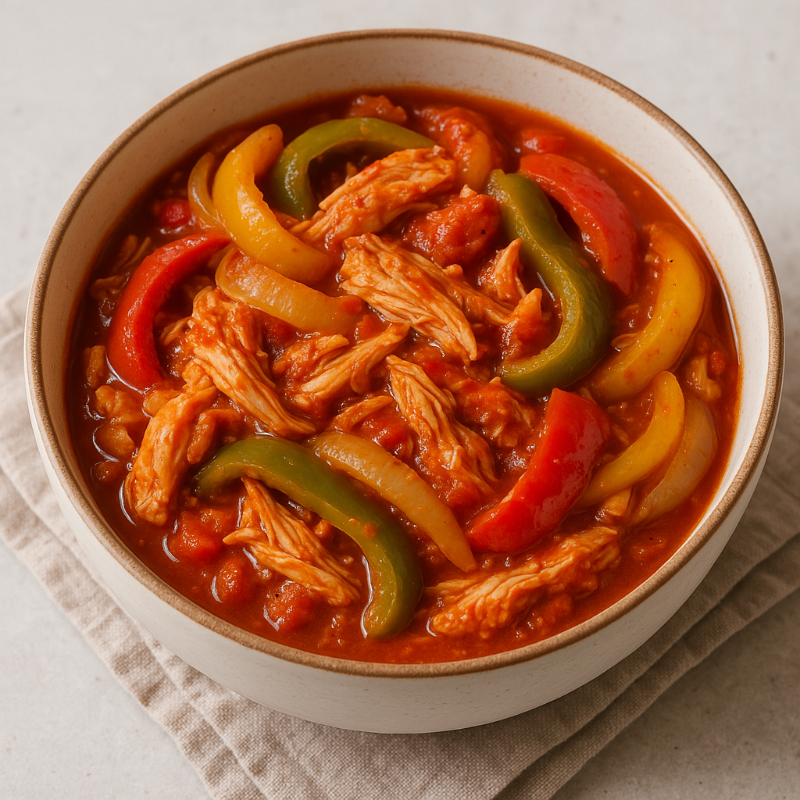

Slow Cooker Chicken and Peppers

Description
Simple, hearty, and full of vibrant flavor, this Slow Cooker Chicken and Peppers recipe is a no-fuss meal that delivers tender, juicy chicken infused with the sweetness of bell peppers and the richness of marinara sauce. With minimal ingredients and prep, this dish is perfect for busy days when you want a wholesome, comforting dinner waiting for you. Serve it over rice, pasta, or enjoy it on its own with crusty bread.
Ingredients
- 1.5 to 2 lbs boneless, skinless chicken thighs or breast
- 1 large yellow onion, sliced
- 3 bell peppers (any combination of red, yellow, orange, or green), sliced
- 2 cups marinara sauce (store-bought or homemade)
- 1 teaspoon garlic powder
- 1 teaspoon onion powder
- 1 teaspoon dired oregano
- 1/2 teaspoon salt (or to taste)
- 1/2 teaspoon black pepper
- 1/4 teaspoon crushed red pepper flakes (optional, for heat)
Steps
- Slice the onion and bell peppers into thin strips. Set aside.
- Place the sliced onions and half of the bell peppers in the bottom of the slow cooker.
- Arrange the chicken thighs on top of the vegetables. Sprinkle with garlic powder, onion powder, oregano, salt, pepper, and crushed red pepper flakes (if using).
- Pour the marinara sauce over the chicken. Then layer the remaining bell peppers on top.
- Cover and cook on low for 6–7 hours or high for 3–4 hours, until the chicken is tender and easily shredded.
- Gently stir to combine everything. Shred the chicken if desired, or serve whole. Spoon over rice, pasta, or serve with crusty bread.
Homepage